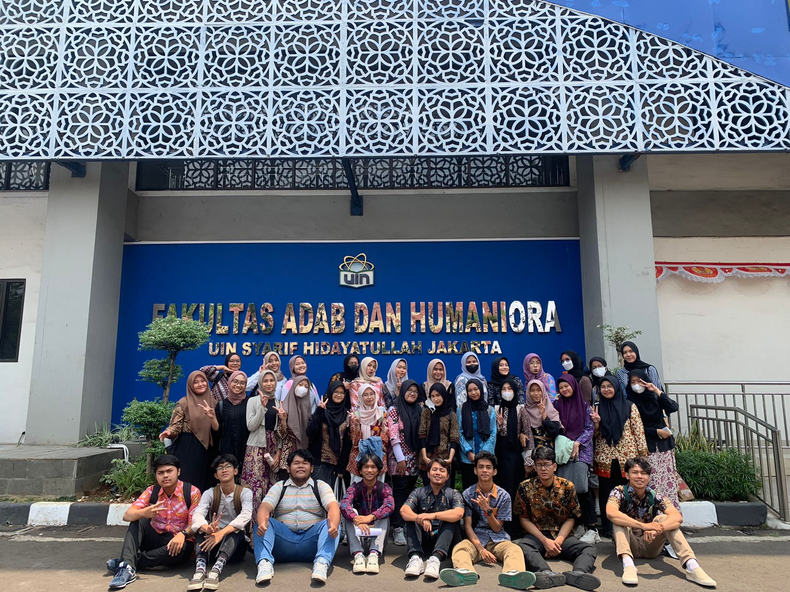
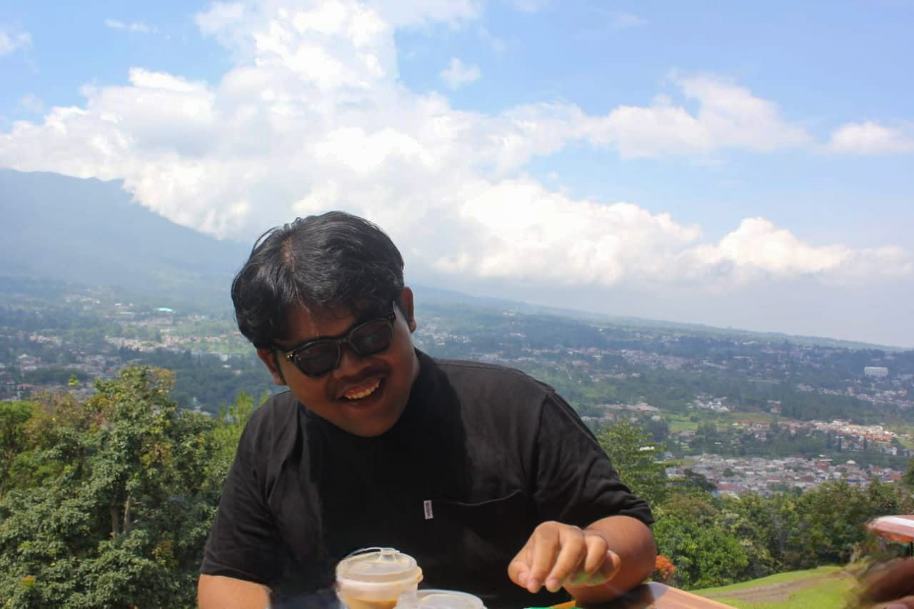

Selamat Datang di Website Buzzcool
Website resmi Kelas 5B Angkatan 2023 – Jurusan Ilmu Perpustakaan. Platform ini menjadi pusat informasi, dokumentasi kegiatan, dan komunikasi antar mahasiswa serta dosen wali.
Profil Kelas Buzzcool
Nama Kelas: Buzzcool
Angkatan: 2023
Jurusan: Ilmu Perpustakaan
Buzzcool adalah sekelompok mahasiswa jurusan Ilmu Perpustakaan yang dikenal solid, kreatif, dan aktif baik di kegiatan akademik maupun sosial. ...

Struktur Organisasi Kelas Buzzcool 5B

Ketua Kelas
Fadel Rachman

Wakil Ketua
Air Langga Wijaya

Sekretaris
Narjasul Aisyi

Bendahara
Annisa Nursetia Jelia